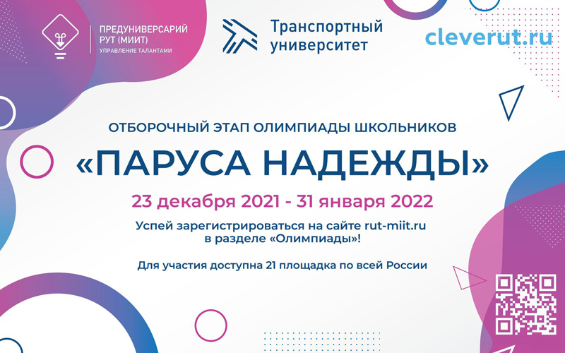
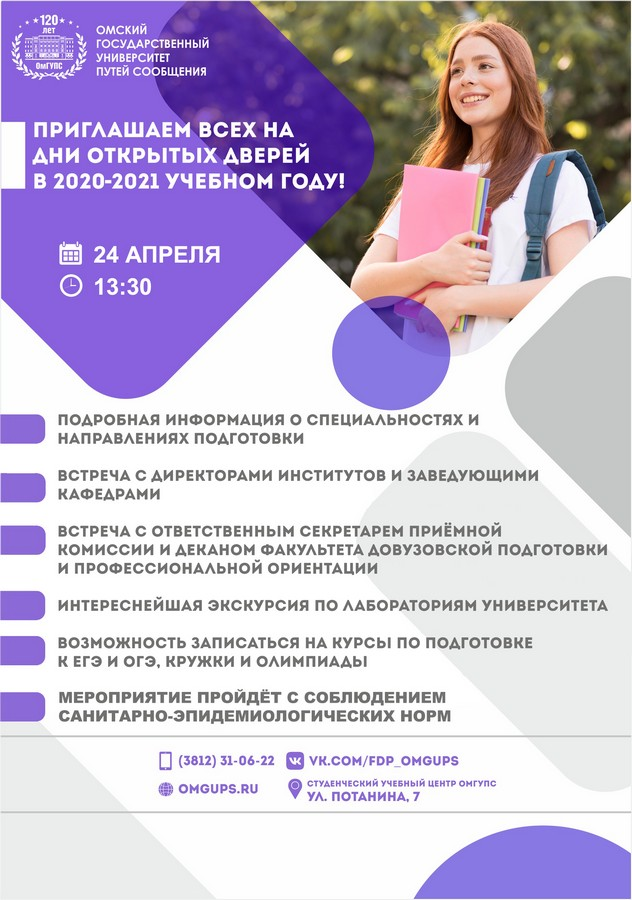
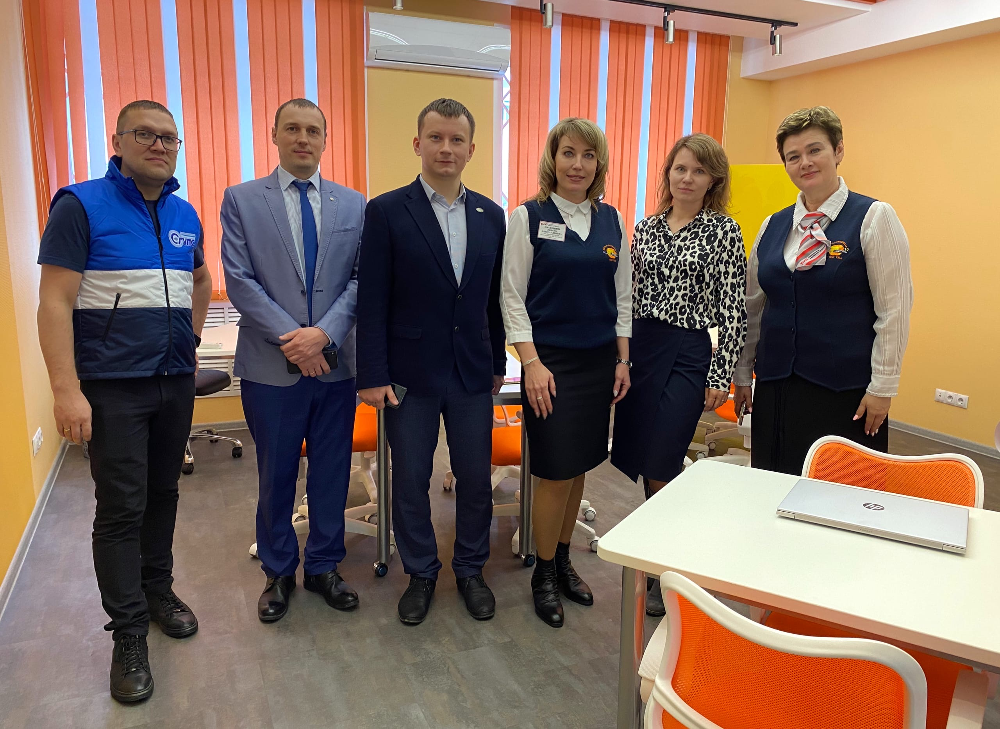

Внутривузовская предметная олимпиада «Будущее Транссиба»
23 мая в ОмГУПСе состоялась очная внутривузовская предметная олимпиада «Будущее Транссиба», которая проводилась для выпускников школ и учебных заведений среднего профессионального образования Омска, Новосибирска, Карасука, Барабинска и Новокузнецка.
Стоит отметить, что диплом участника олимпиады в соответствии с правилами приема в ОмГУПС признается в качестве индивидуального достижения и дает возможность получить три дополнительных балла к результатам ЕГЭ. Наличие статуса победителя или призера олимпиады «Будущее Транссиба» позволяет получить 10 дополнительных баллов.
Итоговые результаты будут опубликованы на сайте
Стоит отметить, что диплом участника олимпиады в соответствии с правилами приема в ОмГУПС признается в качестве индивидуального достижения и дает возможность получить три дополнительных балла к результатам ЕГЭ. Наличие статуса победителя или призера олимпиады «Будущее Транссиба» позволяет получить 10 дополнительных баллов.
Итоговые результаты будут опубликованы на сайте

Электропоезд «Знание. Путь к Великой Победе!»
4 мая на железнодорожном вокзале «Омск-пригород» стартовала акция «Электропоезд «Знание. Путь к Великой Победе!», благодаря которой учащиеся отдалённых районов получили информацию о лучших университетах города. Команда Омского государственного университета путей сообщения работала на протяжении трёх дней на станциях Омск, Называевск, Иртышское и Калачинск.
Электропоезд «Знание. Путь к Великой Победе!» — совместный профориентационный проект компании «Омск-пригород» и областного студенческого отряда (ООСО), который рассказывает будущим абитуриентам о профессиональных учебных заведениях города через призму трудового подвига омичей в годы Великой Отечественной войны.
Электропоезд «Знание. Путь к Великой Победе!» — совместный профориентационный проект компании «Омск-пригород» и областного студенческого отряда (ООСО), который рассказывает будущим абитуриентам о профессиональных учебных заведениях города через призму трудового подвига омичей в годы Великой Отечественной войны.
Итоги профильного форума «Перспектива 2.0»
С 23 по 25 марта на базе Омского государственного университета путей сообщения состоялась профильная смена «Перспектива 2.0» для воспитанников центров профориентации ОАО «РЖД». Участниками смены стали 45 обучающихся 10–11 классов из городов Новокузнецк, Карасук, Барабинск, Кулунда, Белово.
«Благодаря профильному форуму «Перспектива 2.0» мы окунулись в студенческую жизнь, познакомились с преподавателями и студентами, ребятами из других городов, получили опыт работы в команде и выступления на публике. Большое спасибо за организацию форума, редко можно встретить такую насыщенную программу, почти не было свободного времени. Постоянная работа и большое количество полезной информации. Я думаю, многие заинтересовались предложенными возможностями обучения, большинство ребят и я, скорее всего, будем поступать в ОмГУПС», — поделился эмоциями участник форума из Новокузнецка Нагорный К.
Фотографии с мероприятия можно посмотреть по ссылке
Благодарим гостей за участие в профильном форуме и ждём в стенах ОмГУПСа в качестве студентов!
«Благодаря профильному форуму «Перспектива 2.0» мы окунулись в студенческую жизнь, познакомились с преподавателями и студентами, ребятами из других городов, получили опыт работы в команде и выступления на публике. Большое спасибо за организацию форума, редко можно встретить такую насыщенную программу, почти не было свободного времени. Постоянная работа и большое количество полезной информации. Я думаю, многие заинтересовались предложенными возможностями обучения, большинство ребят и я, скорее всего, будем поступать в ОмГУПС», — поделился эмоциями участник форума из Новокузнецка Нагорный К.
Фотографии с мероприятия можно посмотреть по ссылке
Благодарим гостей за участие в профильном форуме и ждём в стенах ОмГУПСа в качестве студентов!
Итоги конкурса «Логотип и название для цифрового парка ОмГУПСа»
Принять участие в конкурсе идей «Локомотив будущего», организованном ОАО «РЖД», могут школьники и студенты от 13 до 22 лет.
Выбирайте задачу:
Подведение итогов и награждение победителей конкурса состоится 21 апреля и будет приурочено к празднованию Всемирного дня творчества и инновационной деятельности.
Лучшие идеи будут использованы при разработке инновационного локомотива, а их авторы смогут поучаствовать в образовательных программах холдинга.
Выбирайте задачу:
- «Локомотив будущего» на «зелёной» тяге;
- эргономика и дизайн интерьера кабины машиниста «Локомотива будущего»;
- дизайн экстерьера «Локомотива будущего»;
- название «Локомотива будущего» и профессии машиниста.
Подведение итогов и награждение победителей конкурса состоится 21 апреля и будет приурочено к празднованию Всемирного дня творчества и инновационной деятельности.
Лучшие идеи будут использованы при разработке инновационного локомотива, а их авторы смогут поучаствовать в образовательных программах холдинга.

Конкурс «Локомотив будущего»
С 14 по 21 февраля факультетом довузовской подготовки и профессиональной ориентации Омского государственного университета путей сообщения проводился конкурс на лучший логотип и креативное название для будущего цифрового парка. По итогам конкурса был получен широкий отклик, как от студентов нашего вуза, так и от школьников города и области.
Победителями в номинации «Логотип и название для цифрового парка» стали:
Торжественное награждение участников конкурса состоится 23 апреля в 13:30 в рамках Дня открытых дверей ОмГУПСа, который пройдет в СтУЦе (ул. Потанина, 7).
Победителями в номинации «Логотип и название для цифрового парка» стали:
- 1 место — Никулина Ю. А. («Студия ПанковА»);
- 2 место — Катриченко С. С. и Романенко А. А. (ОмГУПС группа 51с);
- 3 место — Тамаров А. («Студия ПанковА»).
Торжественное награждение участников конкурса состоится 23 апреля в 13:30 в рамках Дня открытых дверей ОмГУПСа, который пройдет в СтУЦе (ул. Потанина, 7).
Олимпиада «Паруса надежды»
26 и 27 февраля на базе Омского государственного университета путей сообщения состоялся очный этап межрегиональной отраслевой олимпиады «Паруса надежды» для школьников 9–11 классов, преодолевших отборочный тур по дисциплине «Математика» и комплексу предметов «Техника и технологии».
Диплом участника очного этапа олимпиады в соответствии с правилами приёма в университет признаётся в качестве индивидуального достижения при поступлении в Омский государственный университет путей сообщения и даёт возможность получить три дополнительных балла к своим результатам ЕГЭ.
Наличие статуса победителя или призёра олимпиады «Паруса надежды» позволяет получить 10 дополнительных баллов к результатам ЕГЭ, а также воспользоваться правом на приём без вступительных испытаний или иметь право быть приравненными к лицам, набравшим максимальное количество баллов ЕГЭ по общеобразовательному предмету (100 баллов вместо своего результата ЕГЭ) при условии наличия результатов ЕГЭ по профильному предмету олимпиады не менее 75 баллов.
Результаты прохождения очного этапа будут опубликованы в личных кабинетах участников на сайте РУТ (МИИТ) по ссылке.
Диплом участника очного этапа олимпиады в соответствии с правилами приёма в университет признаётся в качестве индивидуального достижения при поступлении в Омский государственный университет путей сообщения и даёт возможность получить три дополнительных балла к своим результатам ЕГЭ.
Наличие статуса победителя или призёра олимпиады «Паруса надежды» позволяет получить 10 дополнительных баллов к результатам ЕГЭ, а также воспользоваться правом на приём без вступительных испытаний или иметь право быть приравненными к лицам, набравшим максимальное количество баллов ЕГЭ по общеобразовательному предмету (100 баллов вместо своего результата ЕГЭ) при условии наличия результатов ЕГЭ по профильному предмету олимпиады не менее 75 баллов.
Результаты прохождения очного этапа будут опубликованы в личных кабинетах участников на сайте РУТ (МИИТ) по ссылке.
Внимание! Конкурс: выбираем название для цифрового парка
В Омском государственном университете путей сообщения реализуется новый проект — создание цифрового парка. Приглашаем школьников, студентов и творческих людей нашего города принять участие в конкурсе на самое креативное название и лучший логотип.
Цифровой парк будет представлять собой многофункциональный комплекс, оснащённый высокотехнологичным оборудованием, на базе которого университетом будет осуществляться подготовка по программам научно-технической направленности для двух групп обучающихся: Schools (учащиеся 8–11 классов) и Students (студенты ОмГУПСа).
Конкурс пройдёт с 14 по 21 февраля включительно.
Победители получат множество подарков от Омского государственного университета путей сообщения и примут участие в торжественной церемонии открытия цифрового парка!
Каждый участник может представить неограниченное количество работ в двух номинациях!
Приветствуются «объёмные» логотипы размером не менее 1000х1000 пикселей в формате PNG, цветовая гамма логотипа указана на рисунке (выше).
Присылайте работы на e-mail: fdpomgups@mail.ru.
В письме необходимо указывать контактные данные: ФИО, номер телефона.
Цифровой парк будет представлять собой многофункциональный комплекс, оснащённый высокотехнологичным оборудованием, на базе которого университетом будет осуществляться подготовка по программам научно-технической направленности для двух групп обучающихся: Schools (учащиеся 8–11 классов) и Students (студенты ОмГУПСа).
Конкурс пройдёт с 14 по 21 февраля включительно.
Победители получат множество подарков от Омского государственного университета путей сообщения и примут участие в торжественной церемонии открытия цифрового парка!
Каждый участник может представить неограниченное количество работ в двух номинациях!
Приветствуются «объёмные» логотипы размером не менее 1000х1000 пикселей в формате PNG, цветовая гамма логотипа указана на рисунке (выше).
Присылайте работы на e-mail: fdpomgups@mail.ru.
В письме необходимо указывать контактные данные: ФИО, номер телефона.
Олимпиада школьников «Паруса надежды»
Омский государственный университет путей сообщения и Российский университет транспорта РУТ (МИИТ) приглашают учеников школ и гимназий 9–11 классов принять участие в межрегиональной транспортной олимпиаде школьников «Паруса надежды», которая пройдёт по двум профилям: «Техника и технологии» и «Математика».
Отборочный (первый) этап олимпиады продлится до 31 января 2022 года. Победители и призёры первого этапа будут приглашены на заключительный этап, который состоится 25 марта (по профилю «Математика) и 26 марта (по профилю «Техника и технологии») в дистанционном формате.
Зарегистрироваться и принять участие в отборочном этапе можно по ссылке

Отборочный (первый) этап олимпиады продлится до 31 января 2022 года. Победители и призёры первого этапа будут приглашены на заключительный этап, который состоится 25 марта (по профилю «Математика) и 26 марта (по профилю «Техника и технологии») в дистанционном формате.
Зарегистрироваться и принять участие в отборочном этапе можно по ссылке
Всероссийская акция «Неделя без турникетов»
13 апреля в рамках Всероссийской акции «Неделя без турникетов» Омский государственный университет путей сообщения посетили учащиеся «Лицея № 64» (базовая школа РАН) и «Лицея № 74» города Омска.
В ходе мероприятия ребята посетили коворкинг-зону ОАО «РЖД», где для них была проведена профориентационная интеллектуальная игра «Сила мысли» от культурно-образовательного пространства «Мюсли Канта» (организатор — заведующая отделом читальных залов научной библиотеки ОмГУПСа Анна Константиновна Миронова). В интерактивном формате лицеисты познакомились с историей вуза и города Омска, узнали о специальностях и направлениях подготовки, реализуемых в институтах университета, и об особенностях приёмной кампании 2021 года.
Цель «Недели без турникетов» — формирование ранней профориентации подростков и молодёжи. Акция представляет собой комплекс мероприятий, направленных на непосредственное знакомство школьников и их родителей с работой предприятий и высших учебных заведений, расположенных в нашем регионе.
В ходе мероприятия ребята посетили коворкинг-зону ОАО «РЖД», где для них была проведена профориентационная интеллектуальная игра «Сила мысли» от культурно-образовательного пространства «Мюсли Канта» (организатор — заведующая отделом читальных залов научной библиотеки ОмГУПСа Анна Константиновна Миронова). В интерактивном формате лицеисты познакомились с историей вуза и города Омска, узнали о специальностях и направлениях подготовки, реализуемых в институтах университета, и об особенностях приёмной кампании 2021 года.
Цель «Недели без турникетов» — формирование ранней профориентации подростков и молодёжи. Акция представляет собой комплекс мероприятий, направленных на непосредственное знакомство школьников и их родителей с работой предприятий и высших учебных заведений, расположенных в нашем регионе.
Новый набор в университетские профильные классы ОмГУПСа
13 апреля состоялось собрание с родителями будущих десятиклассников на базе «Гимназии № 146». Представители ОмГУПСа — декан факультета довузовской подготовки и профессиональной ориентации Дмитрий Владимирович Балагин и заведующая подготовительными курсами ФДПиПО Ксения Владимировна Сеничкина — рассказали о преимуществах обучения в университете, специальностях и направлениях подготовки, а также представили образовательную программу нового университетского профильного класса на 2021–2022 учебный год.
«Сегодня обучение в профильном классе — это возможность непрерывного «погружения» школьников в сферу их будущей специальности, профессиональной деятельности. Профильный класс позволяет изучать, обобщать и накапливать передовой опыт, оперативно апробировать достижения науки, обновлять и обобщать организацию и содержание подготовки учащихся. В классе постоянно открываются новые дисциплины, курсы, а современные технологии позволяют сделать процесс обучения максимально комфортным для ребят. Все занятия в области профессионально-ориентируемых курсов проходят в современных специализированных лабораториях университетского комплекса. В процессе обучения школьники также смогут посетить передовые промышленные предприятия Омской области, а в будущем получить от них и целевые направления на обучение в университете».
«Сегодня обучение в профильном классе — это возможность непрерывного «погружения» школьников в сферу их будущей специальности, профессиональной деятельности. Профильный класс позволяет изучать, обобщать и накапливать передовой опыт, оперативно апробировать достижения науки, обновлять и обобщать организацию и содержание подготовки учащихся. В классе постоянно открываются новые дисциплины, курсы, а современные технологии позволяют сделать процесс обучения максимально комфортным для ребят. Все занятия в области профессионально-ориентируемых курсов проходят в современных специализированных лабораториях университетского комплекса. В процессе обучения школьники также смогут посетить передовые промышленные предприятия Омской области, а в будущем получить от них и целевые направления на обучение в университете».
Приглашаем на День открытых дверей
24 апреля в 13:30 наш университет откроет для вас свои двери.
Мероприятие пройдёт с соблюдением всех санитарно-эпидемиологических норм, а именно:

Мероприятие пройдёт с соблюдением всех санитарно-эпидемиологических норм, а именно:
- все сотрудники университета будут в защитных масках;
- вас мы также просим прийти в масках;
- при входе в здание студенческого учебного центра наши волонтёры проверят температуру бесконтактным способом и обработают ваши руки антисептическими средствами;
- на протяжении всего мероприятия мы будем следить за соблюдением социальной дистанции между участниками мероприятия, в том числе за рассадкой в актовом зале;
- помещения в обязательном порядке будут проветриваться!
Выпускной первого университетского профильного класса
10 апреля состоялся выпускной первого университетского профильного класса ОмГУПСа в БОУ «Гимназия № 43».
В этот знаменательный день актовый зал студенческого учебного центра ОмГУПСа заполнили воодушевлённые успешным окончанием обучения выпускники профильного класса, их родители и друзья. Почётными гостями мероприятия стали:
Об особенностях приёмной кампании 2021 года выпускникам напомнил заместитель ответственного секретаря приёмной комиссии Марсель Фаритович Байсадыков, рассказав школьникам о количестве бюджетных мест на будущий год, минимальных проходных баллах для поступления, сроках и способах приёма документов, перспективах трудоустройства после окончания вуза.
Директора институтов обратились к выпускникам с напутственными словами, пожелали успешной сдачи ЕГЭ и пригласили в университет уже в качестве студентов.
В рамках мероприятия абитуриенты поучаствовали в интерактивной викторине о вузе, победители которой получили толстовки с логотипом ОмГУПСа и брендированные рюкзаки.
В этот знаменательный день актовый зал студенческого учебного центра ОмГУПСа заполнили воодушевлённые успешным окончанием обучения выпускники профильного класса, их родители и друзья. Почётными гостями мероприятия стали:
- Овчаренко Сергей Михайлович — ректор ОмГУПСа;
- Воронов Виталий Иванович — директор «Гимназии № 88»;
- Бахман Алёна Викторовна — заместитель директора «Гимназии № 43».
Об особенностях приёмной кампании 2021 года выпускникам напомнил заместитель ответственного секретаря приёмной комиссии Марсель Фаритович Байсадыков, рассказав школьникам о количестве бюджетных мест на будущий год, минимальных проходных баллах для поступления, сроках и способах приёма документов, перспективах трудоустройства после окончания вуза.
Директора институтов обратились к выпускникам с напутственными словами, пожелали успешной сдачи ЕГЭ и пригласили в университет уже в качестве студентов.
В рамках мероприятия абитуриенты поучаствовали в интерактивной викторине о вузе, победители которой получили толстовки с логотипом ОмГУПСа и брендированные рюкзаки.
Апрель — месяц института наземных транспортных систем
ОмГУПС приглашает на online Дни специальностей!
Абитуриенты, родители и все желающие смогут принять участие в online-встречах, во время которых можно будет познакомиться со специальностями и направлениями подготовки института наземных транспортных систем, пообщаться с преподавателями, узнать много интересной информации о специфике обучения, возможностях трудоустройства и траектории карьеры.
Абитуриенты, родители и все желающие смогут принять участие в online-встречах, во время которых можно будет познакомиться со специальностями и направлениями подготовки института наземных транспортных систем, пообщаться с преподавателями, узнать много интересной информации о специфике обучения, возможностях трудоустройства и траектории карьеры.
Приглашаем всех желающих принять участие! Первая трансляция будет доступна уже 7 апреля в 15:00 на нашем канале YouTube: https://www.youtube.com/channel/UCXgmIKN2fhHkEJMdC-ZGFPA
Профильная смена на базе Центра одарённых детей Новокузнецка
С 23 по 25 марта в Центре одарённых детей на базе школы-интерната № 19 ОАО «РЖД» прошла первая профильная смена, участие в которой приняли старшеклассники из пяти регионов Западно-Сибирской магистрали: Кулунды, Белово, Тайги, Барабинска и Омска.
Подробнее о мероприятии в выпуске РЖД ТВ: http://rzdtv.ru/2021/03/24/v-shkole-internate-rzhd-goroda-novokuznecka-otkrylas-profilnaja-smena/

Я – будущий абитуриент-железнодорожник
С 10 по 13 марта на базе МБОУ «Технический лицей № 176» Карасукского района Новосибирской области прошла профильная смена для старшеклассников «Я – будущий абитуриент-железнодорожник». Участниками смены стали обучающиеся 10 и 11 классов школ Карасукского и Краснозерского районов Новосибирской области, проявившие интерес к дальнейшему обучению в вузах железнодорожного профиля.
В рамках профильной смены школьники работали в инженерно-технологическом центре лицея, занимались в спорткомплексе, прошли профориентационное тестирование, направленное на выявление способностей и профессиональных предрасположенностей, побывали на различных мастер-классах, в рамках экскурсии посетили локомотивное депо Карасук, ознакомились с профессиями, необходимыми на предприятиях железнодорожного транспорта.
На профильной смене ОмГУПС представили:
- декан факультета довузовской подготовки и профессиональной ориентации Дмитрий Владимирович Балагин;
- ответственный секретарь приёмной комиссии Андрей Петрович Шатохин;
- заведующая центрами довузовского обучения Дарья Евгеньевна Родина.
На профильной смене ОмГУПС представили:
- декан факультета довузовской подготовки и профессиональной ориентации Дмитрий Владимирович Балагин;
- ответственный секретарь приёмной комиссии Андрей Петрович Шатохин;
- заведующая центрами довузовского обучения Дарья Евгеньевна Родина.

Профильная смена «Перспектива 2.0» в ОмГУПС
С 3 по 5 марта на базе ОмГУПС прошла профильная смена «Перспектив 2.0» центров профориентации ОАО «РЖД». В течение трёх дней обучающиеся 10–11 классов из Новокузнецка, Карасука и Барабинска погрузились в студенческую жизнь нашего университета.

«Программа профильной смены была интересная и увлекательная. Мне представилась возможность познакомиться с преподавателями, новыми людьми. В ходе мероприятий я получила много новых знаний, узнала историю ОмГУПСа и увидела его со всех сторон. Жили мы в очень хороших условиях. За такой короткий промежуток времени мы получили бесценный опыт, научились делать проектно-исследовательские кейсы и многое другое. Если возникали сложности, нам всегда помогали и объясняли. Было несколько учебных заведений, куда я хотела поступить. Теперь без раздумий могу сказать, что именно в ОмГУПСе хочу учиться. Это мероприятие поспособствовало моему окончательному решению», — поделилась своими впечатлениями участница профильной смены «Перспектива 2.0» Ольга Конопля, город Карасук.
Март — месяц ИАТИТа
ОмГУПС приглашает на online Дни специальностей!
Абитуриенты, родители и все желающие смогут принять участие в online-встречах, во время которых можно познакомиться со специальностями и направлениями подготовки института автоматики, телекоммуникаций и информационных технологий , пообщаться с преподавателями, узнать много интересной информации о специфике обучения, возможностях трудоустройства и траектории карьеры.
Абитуриенты, родители и все желающие смогут принять участие в online-встречах, во время которых можно познакомиться со специальностями и направлениями подготовки института автоматики, телекоммуникаций и информационных технологий , пообщаться с преподавателями, узнать много интересной информации о специфике обучения, возможностях трудоустройства и траектории карьеры.
Приглашаем всех желающих принять участие! Первая трансляция будет доступна уже 3 марта в 15:00 на нашем канале YouTube: https://www.youtube.com/channel/UCXgmIKN2fhHkEJMdC-ZGFPA
Объявление
Онлайн-конференция со слушателями центров довузовской подготовки, центров профориентации "Перспектива 2.0" и опорных школ ОАО "РЖД"
C Новым годом!
Омский государственный университет путей сообщения поздравляет с наступившим Новым 2021 годом и Рождеством!
Пусть 2021 год станет еще более плодотворным и удачным, наполненным новыми возможностями и перспективами. Желаем крепкого здоровья, счастья и благополучия!
Пусть 2021 год станет еще более плодотворным и удачным, наполненным новыми возможностями и перспективами. Желаем крепкого здоровья, счастья и благополучия!

Объявление
Объявление для слушателей центров довузовской подготовки и профориентации "Перспектива 2.0" г. Новокузнецка, г. Новосибирска, г. Карасука, г. Тайги.
Уважаемые слушатели центров! 20 декабря, в воскресенье, состоится первое занятие по математике. В дальнейшем занятия будут проходить по субботам.
Подробная информация, график занятий и ссылки для подключения расположены на портале дистанционного обучения.
Важно! Менять пароль от личного кабинета на портале запрещено!
Уважаемые слушатели центров! 20 декабря, в воскресенье, состоится первое занятие по математике. В дальнейшем занятия будут проходить по субботам.
Подробная информация, график занятий и ссылки для подключения расположены на портале дистанционного обучения.
Важно! Менять пароль от личного кабинета на портале запрещено!
Профориентационная работа ОмГУПС в Новосибирске
Прошли профориентационные мероприятия на базе Новосибирского колледжа транспортных технологий им. Лунина и Новосибирского техникума железнодорожного транспорта — структурного подразделения Сибирского государственного университета путей сообщения
Участники встречи особо отметили преимущества заочной формы обучения с применением дистанционных технологий, что позволяет проходить обучение без отрыва от производства и, в конечном счете, получить высшее профильное образование, которое так необходимо в ОАО «РЖД» на сегодняшний день.
Участники встречи особо отметили преимущества заочной формы обучения с применением дистанционных технологий, что позволяет проходить обучение без отрыва от производства и, в конечном счете, получить высшее профильное образование, которое так необходимо в ОАО «РЖД» на сегодняшний день.

Новогодний День открытых дверей в ОмГУПС
В первую субботу декабря в Омском государственном университете путей сообщения прошел новогодний День открытых дверей.
У школьников и их родителей была возможность пообщаться с директорами институтов, воочию увидеть все достоинства университета, оценить серьезность подхода к образовательному процессу и дальнейшие возможности личностного роста. В фойе студенческого учебного центра ОмГУПСа представители культурно-образовательного пространства «Мюсли Канта» в формате интеллектуальных игровых площадок рассказали будущим абитуриентам об истории ВУЗа, различных культурных и спортивных мероприятиях, проводимых в ОмГУПСе, секциях и творческих коллективах.
У школьников и их родителей была возможность пообщаться с директорами институтов, воочию увидеть все достоинства университета, оценить серьезность подхода к образовательному процессу и дальнейшие возможности личностного роста. В фойе студенческого учебного центра ОмГУПСа представители культурно-образовательного пространства «Мюсли Канта» в формате интеллектуальных игровых площадок рассказали будущим абитуриентам об истории ВУЗа, различных культурных и спортивных мероприятиях, проводимых в ОмГУПСе, секциях и творческих коллективах.

Целевое направление на обучение в ОмГУПС
В целях формирования у школьников и их родителей представлений о правилах приёма на целевое обучение от ОАО «РЖД» в 2021 году состоялась видеоконференция «Целевое направление на обучение в университетах путей сообщения. Возможности центра довузовской подготовки ОмГУПС».
Участниками конференции стали:
- начальник Детской железной дороги города Новосибирска Юлия Станиславовна Романюк;
- заместитель начальника Детской железной дороги по организации учебного процесса Светлана Андреевна Кузнецова;
- заведующая центрами довузовского обучения факультета довузовской подготовки и профессиональной ориентации Дарья Евгеньевна Родина;
- кураторы выпускных групп, будущие целевики и их родители.
Участниками конференции стали:
- начальник Детской железной дороги города Новосибирска Юлия Станиславовна Романюк;
- заместитель начальника Детской железной дороги по организации учебного процесса Светлана Андреевна Кузнецова;
- заведующая центрами довузовского обучения факультета довузовской подготовки и профессиональной ориентации Дарья Евгеньевна Родина;
- кураторы выпускных групп, будущие целевики и их родители.
19.11.2020 г.
На Западно-Сибирской железной дороге состоялся форум «Совершенствование профориентационной работы на полигоне ЗСЖД. Лучшие практики» в дистанционном формате.
Целью форума стало обсуждение перспектив довузовской и профориентационной работы с опорными школами ОАО «РЖД», планов по организации работы в рамках центров довузовской подготовки и профориентации на Западно-Сибирской железной дороге, а также выявление путей вовлечения школьников муниципальных образовательных учреждений в железнодорожную отрасль.
Спикерами форума являлись заместитель начальника железной дороги по кадрам и социальным вопросам Александр Михайлович Теслевич, заместитель начальника службы управления персоналом Юлия Викторовна Ноздрякова, представители Омского и Сибирского университетов путей сообщения, директоры опорных школ ОАО «РЖД», руководители центров довузовской подготовки, центров профориентации «Перспектива 2.0» и заместители начальников дирекций по кадрам и социальным вопросам.
От Омского государственного университета путей сообщения на форуме приняли участие:
- проректор по производственному обучению и связи с производством Олег Владимирович Балагин;
- декан факультета довузовской подготовки и профессиональной ориентации Дмитрий Владимирович Балагин;
- заведующая центрами довузовского обучения факультета довузовской подготовки и профессиональной ориентации Дарья Евгеньевна Родина.
Целью форума стало обсуждение перспектив довузовской и профориентационной работы с опорными школами ОАО «РЖД», планов по организации работы в рамках центров довузовской подготовки и профориентации на Западно-Сибирской железной дороге, а также выявление путей вовлечения школьников муниципальных образовательных учреждений в железнодорожную отрасль.
Спикерами форума являлись заместитель начальника железной дороги по кадрам и социальным вопросам Александр Михайлович Теслевич, заместитель начальника службы управления персоналом Юлия Викторовна Ноздрякова, представители Омского и Сибирского университетов путей сообщения, директоры опорных школ ОАО «РЖД», руководители центров довузовской подготовки, центров профориентации «Перспектива 2.0» и заместители начальников дирекций по кадрам и социальным вопросам.
От Омского государственного университета путей сообщения на форуме приняли участие:
- проректор по производственному обучению и связи с производством Олег Владимирович Балагин;
- декан факультета довузовской подготовки и профессиональной ориентации Дмитрий Владимирович Балагин;
- заведующая центрами довузовского обучения факультета довузовской подготовки и профессиональной ориентации Дарья Евгеньевна Родина.
26.10.2020 г.
ОмГУПС приглашает школьников 9-11-х классов принять участие во внутривузовской предметной олимпиаде по физике и математике. Участие возможно по одному или по двум предметам.
Олимпиада — это возможность для школьников оценить уровень своих знаний и проверить себя перед сдачей ЕГЭ и ОГЭ. В оценочную комиссию входят ведущие доценты кафедр «Физика и химия» и «Высшая математика» Омского государственного университета путей сообщения.
Даты проведения олимпиад:
Математика 13.02.2021;
Физика 14.02.2021.
Каждому участнику олимпиады будет выдан сертификат.
Олимпиада — это возможность для школьников оценить уровень своих знаний и проверить себя перед сдачей ЕГЭ и ОГЭ. В оценочную комиссию входят ведущие доценты кафедр «Физика и химия» и «Высшая математика» Омского государственного университета путей сообщения.
Даты проведения олимпиад:
Математика 13.02.2021;
Физика 14.02.2021.
Каждому участнику олимпиады будет выдан сертификат.

Набор в центры довузовской подготовки и профориентации ОАО «РЖД»
ОмГУПС совместно с Западно-Сибирской железной дорогой на протяжении многих лет реализует подготовку будущих целевиков ОАО «РЖД».
На данный момент функционируют центры в семи городах: г. Омск, г. Новосибирск, г. Новоалтайск, г. Тайга, г. Новокузнецк, г. Барабинск, г. Карасук.
В центры еженедельно выезжают преподаватели вуза, имеющие большой опыт подготовки школьников к ЕГЭ. Подготовка осуществляется по базовым предметам, необходимым для поступления на технические специальности и направления подготовки – математика (профильный уровень), физика.
Занятия проходят с декабря по май. Помимо обучения проводятся различные профориентационные мероприятия, форумы, тренинги, игры.
Запись в центры: (3812) 31-06-22, 8 (913) 963-60-23
На данный момент функционируют центры в семи городах: г. Омск, г. Новосибирск, г. Новоалтайск, г. Тайга, г. Новокузнецк, г. Барабинск, г. Карасук.
В центры еженедельно выезжают преподаватели вуза, имеющие большой опыт подготовки школьников к ЕГЭ. Подготовка осуществляется по базовым предметам, необходимым для поступления на технические специальности и направления подготовки – математика (профильный уровень), физика.
Занятия проходят с декабря по май. Помимо обучения проводятся различные профориентационные мероприятия, форумы, тренинги, игры.
Запись в центры: (3812) 31-06-22, 8 (913) 963-60-23
«Всероссийская Книга почёта»
Омский государственный университет путей сообщения включён в Федеральный Реестр «Всероссийская Книга Почёта» за 2020 год.
Факт включения организации в Реестр означает признание на уровне органов исполнительной власти её значимости для развития своего региона, подтверждает деловую и общественную репутацию, подчеркивает её статус.
Наш университет традиционно попадает на страницы «Всероссийской Книги Почёта» и отмечается как одно из лучших и достойных учреждений, которое своей работой способствует социально-экономическому развитию не только Омской области, но и России.
Факт включения организации в Реестр означает признание на уровне органов исполнительной власти её значимости для развития своего региона, подтверждает деловую и общественную репутацию, подчеркивает её статус.
Наш университет традиционно попадает на страницы «Всероссийской Книги Почёта» и отмечается как одно из лучших и достойных учреждений, которое своей работой способствует социально-экономическому развитию не только Омской области, но и России.
Все дороги ведут в ОАО «РЖД»
В рамках мероприятий, посвящённых дню рождения ОАО «РЖД» в Омском государственном университете сообщения состоялась лекция заместителя начальника службы вагонного хозяйства Западно-Сибирской дирекции инфраструктуры — филиала ОАО «РЖД» Сергея Васильевича Киселева, который выступил с презентацией «Структура вагонного хозяйства на Западно-Сибирской железной дороге». Обсуждались темы инноваций в вагоностроении, расширения и совершенствования автоматизированного приёма и диагностики подвижного состава, повышения эффективности деятельности вагонного комплекса. Помимо этого, Сергей Васильевич поделился с будущими коллегами плюсами работы в Западно-Сибирской дирекции инфраструктуры.